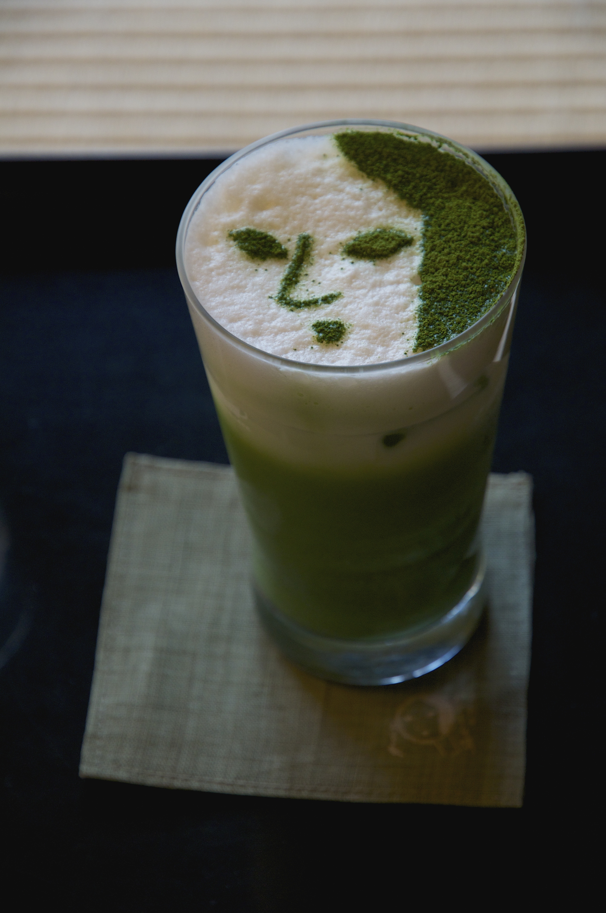

The essentials
Your favorite matcha powder, hot water, and a chasen/whisk.
JOAQUIN'S MATCHA NOTEBOOK
A green cup, a quiet morning, and something to look forward to. Welcome to my matcha page.
Take a sip, stay a while
01 / MY MATCHA PAGE
Hi, I'm Joaquin, and this is my matcha page. The color of a freshly whisked bowl, the swirl of green meeting milk, and a favorite cup on the desk.
I always enjoy making matcha in the morning as it helps me get ready for the day.
02 / WHAT DO YOU NEED
Your favorite matcha powder, hot water, and a chasen/whisk.
Add ice, milk, maybe some sweetener,and and pour your matcha over it. Take a moment to admire the layers before you mix.
Sit down relax and enjoy the cup of matcha after you've prepared it.
03 / THE RITUAL
Pick a favorite cup. Sift the matcha, add a little warm water until the powder is a green paste, and whisk until smooth, then add some more water and whisk in a "W" motion until you get a foam texture. Enjoy it as a tea, or pour it over milk and ice for a latte.
Adjust the balance to your own taste. The best part of a personal ritual is making it your own.
Get to know matcha